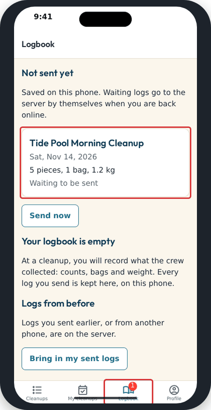

How to run Session 17, the close of Part 2: a check-in on the Tamarack County Library Bookmobile project with short rubric conversations, the Part 2 assessment (written, closed book, 20 points, 14 to meet), three-minute project demos with peer feedback, and a review that bridges to Part 3 or closes the course when Part 2 runs alone.
final-assessment.html (Part 2 section) holds the key, the marking and the scoring sheet; labs/projects/part2-tamarack-bookmobile/RUBRIC.md holds the six rows R1 to R6. This guide says how to run them. Part 2 met = the Bookmobile Stops project complete under its rubric (no row at 0) AND the Part 2 assessment met (14 or more of 20 points, 70 %).npx tsc --noEmit, npx expo lint, Jest, npx expo export); a learner with Expo Go may show it on a phone, and nothing is scored on a phone.The Part 2 assessment is written and closed book: laptops closed, phones and chat assistants away, no notes. A learner with the course app open is no longer being assessed, and the result says nothing about Part 2. Before: print the question paper (the workbook's assessment pages) one per learner, single-sided, and keep them until the break. In the room: at the break, laptops closed and bags on the floor; walk the room once. A learner who arrives late gets the remaining time, not more; a learner who misses the session takes it at an agreed time with the same paper. Demos run long: three minutes on a timer, questions only from the rubric.
python3 labs/check_labs.py projects/part2-tamarack-bookmobile. The starter's checks fail where its TODOs are; the model solution passes the type check, the linter (0 problems), Jest and the exports, and its API (bookmobile-api, port 4100 by default) answers.final-assessment.html, Part 2 section), labs/projects/part2-tamarack-bookmobile/RUBRIC.md for each learner, sticky notes for the exit ticket.lesson_19.html and lesson_24.html open for the review block's screenshots.| Clock | Minutes | Segment | What happens |
|---|---|---|---|
| 0:00 | 15 | Warm-up: Part 2 on one page | Learners fill the workbook's Part 2 map; three cold-call questions. |
| 0:15 | 50 | Part 2 project check-in | Studio time on Bookmobile Stops; a five-minute rubric check-in at each table; self-assessment. |
| 1:05 | 10 | Break | Projector: the question paper and the timer ready. Learners: laptops closed, phones and chat assistants away. |
| 1:15 | 45 | Part 2 assessment | Written, closed book, 20 points: 14 multiple-choice items and 3 short-answer / code-reading items. |
| 2:00 | 40 | Part 2 project demos | Three minutes each in the web preview: one stop from the list to its screen, the Holds tab as a guest and signed in, one hold made with no connection; one peer's rubric feedback. |
| 2:40 | 10 | Part 2 review and what comes next | What Part 2 built; Part 3 in one slide, or the course close when Part 2 runs alone. |
| 2:50 | 10 | Wrap-up | Exit ticket, self-assessments handed in, how results and resubmission work, bring list. |
| Total | 180 | Ends at 3:00. |
In the room. No new content: the time goes to the project (50 minutes of studio and check-ins, 40 of demos), the assessment (45) and closing Part 2. The self-check (12 items reviewing Part 2) is homework or a warm-down for fast finishers.
Goes home (about 2 to 3 hours). The Part 2 project, to the hand-in one week after this session (the folder without node_modules, dist and .expo, with NOTES.md and the outputs the brief asks for); the 12 self-check items; anything the scoring sheet's "next step" says. When Part 3 follows: Lesson 7.1's starting point (Shoreline Crew at the end of Lesson 6.5, or the lesson-25-start download) running in the web preview with shoreline-api.
Protect, in this order: the assessment's 45 minutes and its conditions; the check-in conversations (every learner hears where they stand before the hand-in); the demos. Cut first: the review block (5 minutes of it), then the warm-up's map (do it as homework).
clientId and is sent when the phone is back online; the same clientId twice is one hold).| Module | Title | Lessons | Ideas the project uses |
|---|---|---|---|
| 4 | Navigation with Expo Router | 4.1 to 4.4 | routes from files, stacks and canGoBack, tabs and modals, sign-in with Stack.Protected and SecureStore, deep links and the anchor |
| 5 | Data | 5.1 to 5.5 | the API from a phone (--host, the address per device), TanStack Query with the phone's managers, AsyncStorage and SQLite, forms with React Hook Form and Zod, the offline queue with clientIds |
| 6 | Device Features | 6.1 to 6.5 | permissions at the right moment, camera and photos, location and maps, local notifications, haptics and sharing files |
| 5m | Where we are: the requirements R1 to R6, the hand-in one week from today, the rubric's six rows |
| 40m | Studio time; you visit each table for a five-minute rubric check-in |
| 5m | Self-assessment: each learner scores their own project with the rubric (workbook) |
| Requirement | Lessons | What "meets" asks for (summary; the full rubric is RUBRIC.md) |
|---|---|---|
| R1 Routing and tabs | 4.1, 4.2, 4.4 | Tabs Stops, Books, Holds and Account; a stop's own screen at stops/[id]; a not-found screen (a deep link is optional) |
| R2 Simple sign-in and a protected tab | 4.3 | card number + PIN; the session kept the way Lesson 4.3 does (SecureStore, memory only in the web preview); the Holds tab protected |
| R3 Data from the mock API | 5.1, 5.2 | a typed client with guards; TanStack Query with the phone's managers; loading, error and empty states; pull to refresh |
| R4 Offline-safe storage | 5.3, 5.5 | hold requests in a persisted queue with clientIds that syncs when back online; the My stop setting in AsyncStorage |
| R5 The form and the device feature | 5.4, 6.1, 6.3 | the place-hold form (React Hook Form + Zod); Find my nearest stop: the location question at the right moment, a no handled |
| R6 Quality | all | types, accessibility labels, npx tsc --noEmit, npx expo lint 0 problems, Jest, npx expo export for web, android and ios, NOTES.md |
Each row scores 0 (not yet), 1 (meets) or 2 (strong), the scale of Lesson 10.1's rubric: 12 points in all. Complete = no row at 0; the total is recorded, with no threshold. The full rubric with the words for 0, 1 and 2 is labs/projects/part2-tamarack-bookmobile/RUBRIC.md (and final-assessment.html, Part 2 section).
npx tsc --noEmit, npx expo lint and the tests." (Where on the TODO list are they? Routing and the data, R1 to R3, should be done or close.)clientId on every press (R4). "Your hold's answer got lost and the queue sends it again: does the API see one hold or two?" Make the id once per hold, as Lesson 5.4's form does when it opens..web.ts twin (Lessons 6.2 and 6.5).The model solution's own runs are in the project's lab.json (the kit's checker) and in its instructor notes; scoring guidance by row, the instructor notes and the scoring sheet are in final-assessment.html (Part 2 section). Nothing here quotes them: rerun the checker if you want to see them.
One multiple-choice item per lesson, 4.1 to 6.5; the correct letters are BCADCADBACBDBA (A1 to A14). A16 and A17 show code copied from the course's stages (the debris-log form after Lesson 5.5, permissionStep from Lesson 6.1).
| Item | Lesson | Topic | Kind | Points | Key |
|---|---|---|---|---|---|
| A1 | 4.1 | Stack navigation: canGoBack and replace | multiple choice | 1 | B |
| A2 | 4.2 | Tabs: moving index into the group | multiple choice | 1 | C |
| A3 | 4.3 | Sign-in: close first, then set the session | multiple choice | 1 | A |
| A4 | 4.4 | Deep links: the anchor and dismissTo | multiple choice | 1 | D |
| A5 | 5.1 | Reaching the API: what --tunnel carries | multiple choice | 1 | C |
| A6 | 5.2 | TanStack Query: screens that never unmount | multiple choice | 1 | A |
| A7 | 5.3 | Device storage: validate what you load | multiple choice | 1 | D |
| A8 | 5.4 | Mobile forms: handleSubmit on a phone | multiple choice | 1 | B |
| A9 | 5.5 | Offline first: what goes in the queue | multiple choice | 1 | A |
| A10 | 6.1 | Permissions: purpose strings in app.json | multiple choice | 1 | C |
| A11 | 6.2 | Photos: a size and a type the API takes | multiple choice | 1 | B |
| A12 | 6.3 | Check-in: a mutation must say what changed | multiple choice | 1 | D |
| A13 | 6.4 | Notifications: a tap's data is outside input | multiple choice | 1 | B |
| A14 | 6.5 | Files: nothing at the top level of a module | multiple choice | 1 | A |
| A15 | 4.3 | Guards hide screens; the API protects data | short answer | 2 | see marking |
| A16 | 5.5 | The clientId: made once per log | short answer | 2 | see marking |
| A17 | 6.1 | Permissions: denied or blocked | short answer | 2 | see marking |

lesson-25-start download.clientIds, the Holds tab's guard, the stops query, the location question behind Find my nearest stop).final-assessment.html (Part 2 section).node_modules, dist and .expo (or a repository link), with NOTES.md and what labs/projects/part2-tamarack-bookmobile/BRIEF.md asks for. Run npx tsc --noEmit, npx expo lint, the tests and the web export before you hand in.lesson-25-start download) running in the web preview with shoreline-api.Twelve items across Lessons 4.1 to 6.5 in the workbook, for home or for fast finishers:
Answers: Q1 C) Navigation the code decides, such as leave(): back when something is underneath, home when not; Q2 A) As an ordinary screen with a back arrow (measured); the ways to close a modal differ by platform and swiping a card down is not obvious to everyone; Q3 D) Every page load logs an SSR error, Missing getServerSnapshot, and the page switches to client rendering: the third argument (() => null) is what the server render uses; Q4 B) The tabs underneath are real screens: the Cleanups tab also loads its first page of cleanups and the sites (three requests instead of one); Q5 A) EXPO_PUBLIC_API_URL=http://10.0.2.2:4000 npx expo start --clear: a variable set in the terminal wins over the file, and 10.0.2.2 is the emulator's name for your computer; Q6 C) shoreline-api is on your Wi-Fi: a network without internet still reaches it, and "reachable" means NetInfo could reach a test address on the internet; Q7 B) Turns the comma into a point before it checks the value, so the log says 2.5 kg; Q8 D) filter builds a new array on every call, so the store never sees the same answer: a blank page and React's error #185, Maximum update depth exceeded; Q9 The phone's question comes with the app's reason, at the moment the feature is wanted (ask in context, explain first). On an iPhone a no is final after one answer (only Settings can change it), so the app explains first, and Not now leaves the phone's question unasked for a better moment; Q10 A) It is gone: in the web preview a photo is a blob: address in the browser's memory that lasts until the page reloads (photoFiles.web.ts); on a phone it was moved into the app's documents; Q11 B) An object with a type: { type: Notifications.SchedulableTriggerInputTypes.DATE, date: reminderTime(event) }; Q12 Share.share for words and links (the cleanup's link, Lesson 4.4); shareAsync for one local file (the logbook CSV). shareAsync wants a local file address: given https://… it type-checks, but on Android it refuses ("Only local file URLs are supported"). Full set with explanations in the Answer Key.
node server.ts starts shoreline-api and npx expo start opens Shoreline Crew at the end of Lesson 6.5 in the web preview: Session 18 starts there (newcomers: lesson-25-start and Session 18's catch-up steps).